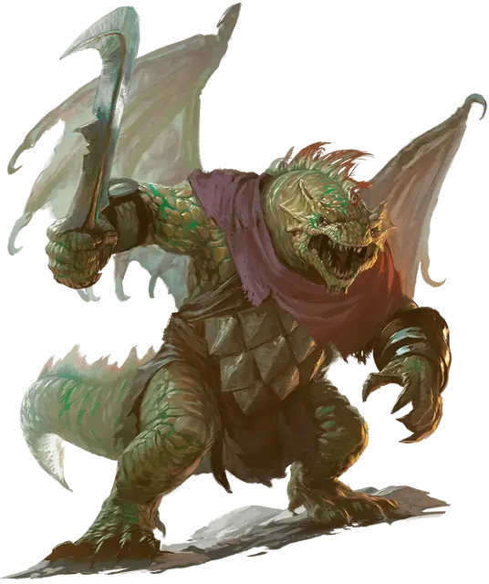

Драконид пехотинец
Draconian Foot Soldier
Средний Монстр, любое мировоззрение

Класс Доспеха 14 (природный доспех)
Хиты 22 (4к8 + 4)
Скорость 30 футов
| мод | спас | ||
|---|---|---|---|
| СИЛ | 13 | +1 | +1 |
| ЛОВ | 11 | +0 | +0 |
| ТЕЛ | 13 | +1 | +1 |
| мод | спас | ||
|---|---|---|---|
| ИНТ | 8 | −1 | −1 |
| МДР | 8 | −1 | −1 |
| ХАР | 10 | +0 | +0 |
Чувства тёмное зрение 60 футов, пассивное Восприятие 9
Языки Общий, Драконий
Опасность 1/2 (100 опыта)
Бонус мастерства +2
Особенности
Контролируемое падение. Когда драконид падает и дееспособен, он вычитает до 100 футов от высоты падения при расчете урона от падения.
Предсмертные муки. Когда хиты драконида уменьшаются до 0, его тело превращается в камень и выделяет газ окаменения. Каждое существо в пределах 5 фт. от драконида должно преуспеть в спасброске Телосложения Сл 11, иначе станет опутанным, и оно начнет превращаться в камень. Опутанное существо должно повторить спасбросок в конце своего следующего хода. В случае успеха эффект заканчивается; в противном случае существо окаменевает на 1 минуту. Через 1 минуту тело драконида рассыпается в пыль.
Действия
Мультиатака. Драконид совершает две атаки коротким мечом.
Короткий меч. Рукопашная атака оружием: +3 к попаданию, досягаемость 5 фт., одна цель. Попадание: 4 (1к6+1) колющего урона.
Описание
Самыми многочисленными драконидами являются пехотинцы, которые рождаются из латунных, белых или хрустальных драконьих яиц. Они самые маленькие в своем роде, и их тонкие крылья не способны летать, хотя они дают драконидам некоторый контроль при падении. Эти крылья достаточно малы, чтобы их можно было спрятать под плащом или халатом, поэтому пехотинцы иногда маскируются, чтобы приблизиться к врагам, прежде чем устроить засаду. Когда дракониды пехотинцы умирают, они испускают облако окаменяющего газа, превращая трупы — и любых существ в области действия облака — в камень.
В мире Кринн дракониды пехотинцы, сформированные из латунных драконьих яиц, называются драконидами Бааз.
Дракониды - двуногие монстры, рожденные из драконьих яиц, которые были испорчены или искажены могущественной магией. Чаще всего эта развращение является преднамеренным актом, работой честолюбивого тирана, стремящегося превратить украденные яйца в драконидскую армию. Одно испорченное яйцо дает несколько драконидов одного и того же вида. На первый взгляд драконида можно принять за драконорожденного, хотя у большинства видов драконидов есть крылья.
Когда дракониды умирают, они не уходят тихо. Вместо этого их безжизненные тела высвобождают последний акт магического неистовства.